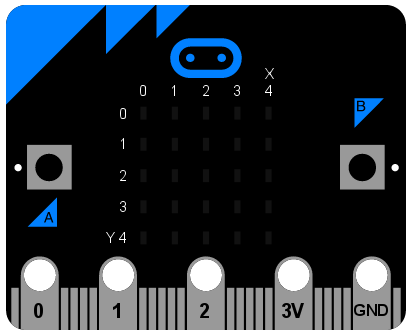
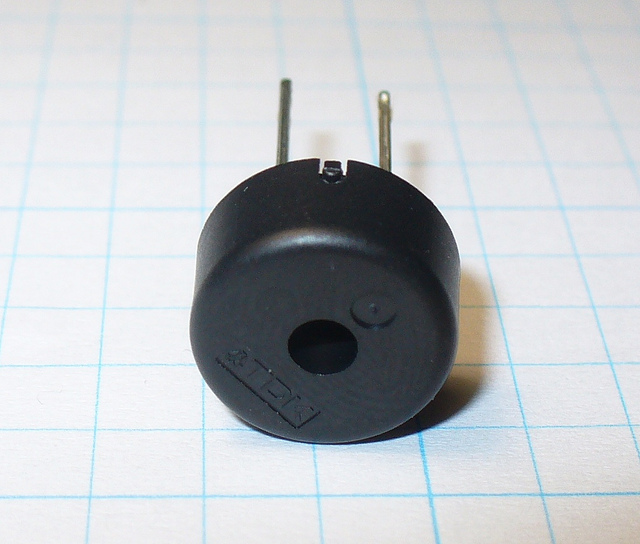

Vstup/Výstup¶
Na spodnom okraji micro:bitu sa nachádzajú kovové prúžky, vďaka ktorým vyzerá trochu, ako keby mal zuby. Sú to vstupno/výstupné piny (skrátene tiež I/O piny).
Niektoré piny sú väčšie ako iné, takže je možné k nim pripojiť krokodílky. Sú označené 0, 1, 2, 3V a GND (počítače vždy počítajú od nuly). Ak ku zariadeniu pridáš konektorovú dosku, bude možné zapojiť aj káble pripojené k ďalším (menším) pinom.
Každému pinu na micro:bite zodpovedá objekt s názvom pinN, kde N je číslo pinu. Takže napríklad, ak chceme niečo robiť s pinom označeným ako 0 (nula), použijeme objekt s názvom pin0.
Jednoduché!
K týmto objektom sú priradené rôzne metódy podľa toho, čo ktorý pin dokáže robiť.
Šteklivý Python¶
Najjednoduchší príklad vstupu cez piny je zistiť, či sa ich niečo dotýka. Takže môžeme poštekliť naše zariadenie, aby sa smialo - takto:
from microbit import *
while True:
if pin0.is_touched():
display.show(Image.HAPPY)
else:
display.show(Image.SAD)
Jednou rukou drž zariadenie za pin GND. Potom sa druhou rukou dotkni (alebo poštekli) pin 0 (nula). Mal(a) by si vidieť, že displej sa zmení z mrzutého na šťastný!
Toto je úplne najzákladnéejší spôsob merania vstupov. Ale skutočná zábava začína až keď zapojíš obvody a ďalšie zariadenia cez piny.
Pípanie a bublanie¶
Najjednoduchšia vec, ktorú vieme pripojiť k zariadeniu je Piezo bzučiak. Budeme ho používať na výstup.
Keď sú tieto malé zariadenia zapojené do obvodu, vydávajú vysoký piskľavý zvuk. Na pripojenie k micro:bitu ti postačí zapojiť krokodílky na piny 0 a GND (ako na obrázku nižšie).

Drôt z pinu 0 musí byť pripojený na kladný konektor na bzučiaku a drôt z GND musí ísť na záporný konektor.
Tento program spôsobí, že bzučiak vydá zvuk:
from microbit import *
pin0.write_digital(1)
Toto je zábavné asi tak 5 sekúnd a potom už chceš ten príšerný piskot zastaviť. Vylepšime teda náš príklad a zariaďme, aby zariadenie pípalo:
from microbit import *
while True:
pin0.write_digital(1)
sleep(20)
pin0.write_digital(0)
sleep(480)
Rozumieš tomu, ako ten skript funguje? Nezabudni, že vo svete počítačov 1 znamená „zapnuté“ („on“) a 0 je „vypnuté“ („off“).
Zariadenie je v nekonečnom cykle a okamžite zapína pin 0. To spôsobí, že bzučiak pípne. Kým bzučiak pípa, zariadenie spí 20 milisekúnd a potom pin 0 vypne. Toto vytvára zdanie krátkeho pípnutia. Nakoniec zariadenie spí 480 milisekúnd, kým sa cyklus nespustí odznova. To znamená, že máš dve pípnutia za sekundu (každých 500 milisekúnd jedno).
Vyrobili sme jednoduchý metronóm!